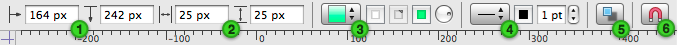

About the rulers and the inspector bar
The rulers help you position objects on the canvas. To see the rulers, select them from the View menu or click their toolbar icon.
As you drag an object around the canvas, lines appear on the ruler to help you find just the right placement.
You can also create manual guides from the ruler: click and hold in the top or side ruler, then drag to the canvas area.
By default, the very upper-left corner of a canvas is its origin (that is, the point where the rulers' measurements start from, where the coordinates are 0,0). To change the origin, drag the origin from the corner where the rulers meet. (You can also enter values in the Canvas Size inspector's Origin fields.) The coordinates in the Geometry inspector are based on this origin point.
When you are editing text, tab stops appear on the ruler and text formatting controls appear above it. You can style text, change the spacing and alignment, or drag tab stops to and from the ruler.
When you aren't editing text, the area above the ruler contains controls for editing basic attributes of selected objects; this is the inspector bar.

 The X and Y position, just like in the Geometry inspector.
The X and Y position, just like in the Geometry inspector.  The width and height, also just like in the Geometry inspector.
The width and height, also just like in the Geometry inspector.  A pop-up menu for choosing a fill type; three color wells which become enabled depending on the type of fill you choose; a rotation control for orienting linear blends.
A pop-up menu for choosing a fill type; three color wells which become enabled depending on the type of fill you choose; a rotation control for orienting linear blends.  A pop-up menu for choosing a stroke type, corner style, connection line type, and line head and tail styles; a color well for choosing a stroke color; a field for stroke thickness.
A pop-up menu for choosing a stroke type, corner style, connection line type, and line head and tail styles; a color well for choosing a stroke color; a field for stroke thickness.  A button for quickly turning shadows on or off. For more control over shadows than just turning them on or off, visit the Shadow inspector.
A button for quickly turning shadows on or off. For more control over shadows than just turning them on or off, visit the Shadow inspector.  A button for quickly enabling or disabling connections to or from other objects. For finer control, visit the Connections inspector.
A button for quickly enabling or disabling connections to or from other objects. For finer control, visit the Connections inspector.